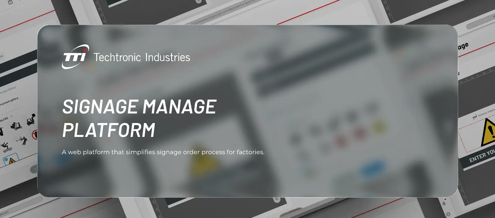
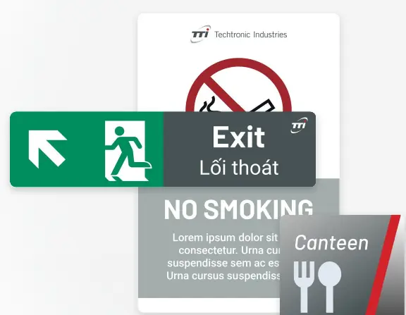
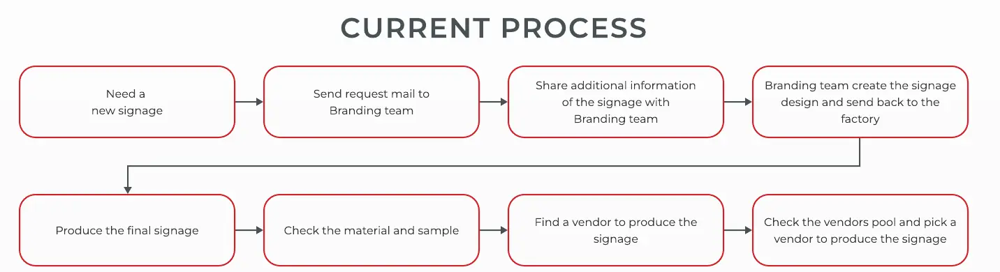
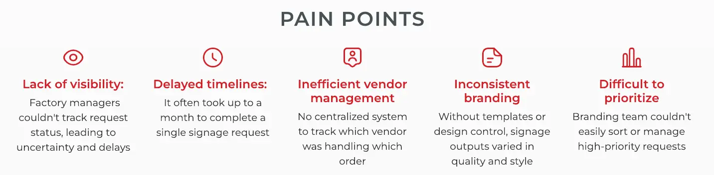
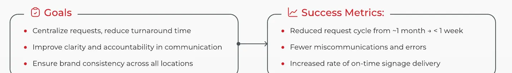
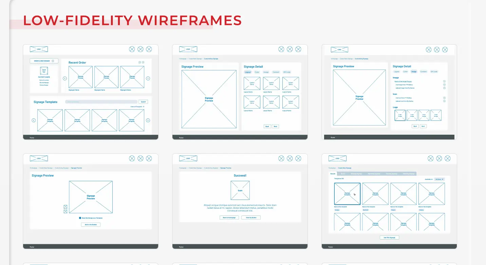
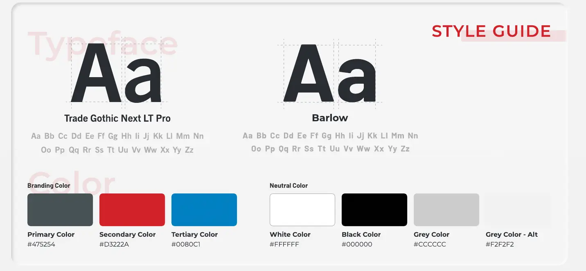
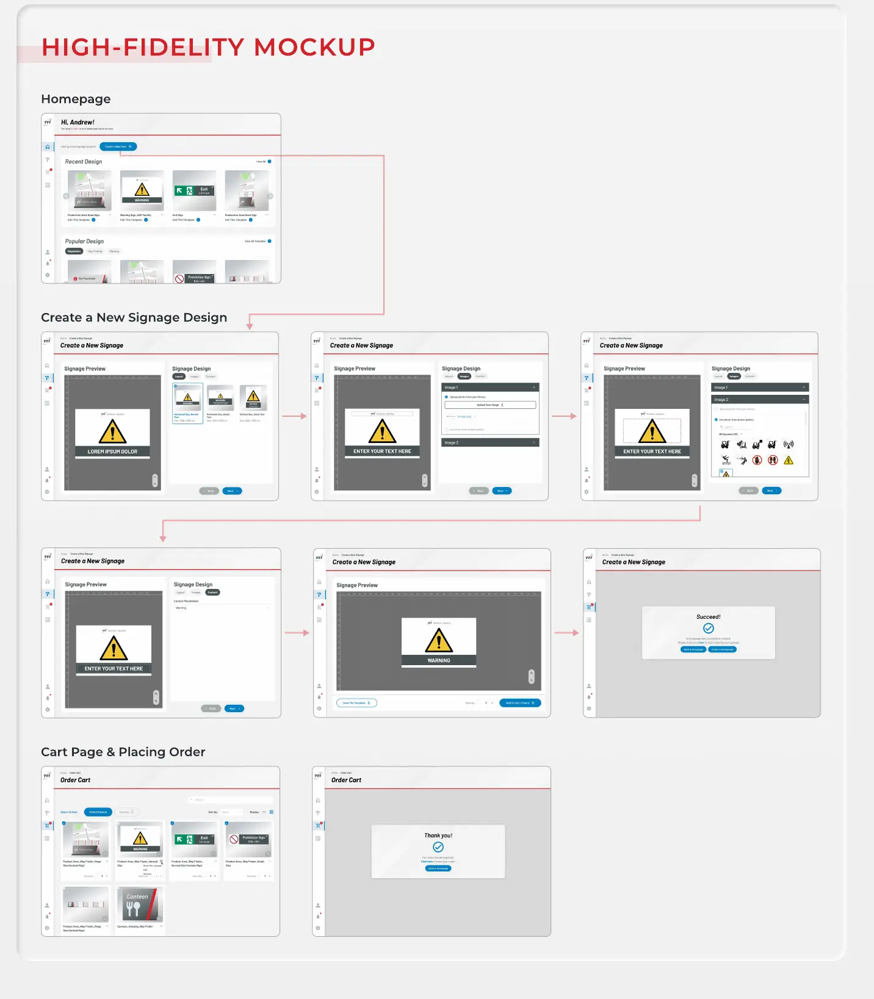

Signage Manage Platform
A web platform that simplifies the signage ordering process for factories.
Project Overview
The Internal Signage Ordering Platform replaces the manual email process factory managers used to request signage. It streamlines request submission, design collaboration and task tracking.
It supports both template-based and custom signage, giving factories more control while helping the branding team stay organized. The result is a better cross-department workflow and consistent branding across all locations.

Problem Statement
Factory managers submitted signage requests via email, which led to long communication loops and poor tracking. The branding team, responsible for visual consistency, struggled to manage requests, monitor design delivery and coordinate with multiple printing vendors.


Proposed Solution
Direct user research wasn’t feasible due to internal limitations, so I worked with indirect feedback from stakeholders and recurring issues reported to management. I prioritized key pain points, mapped success metrics, and proposed features for both factory managers and the branding team.

Key features
- Signage Templates: pre-approved designs ready for quick ordering
- Custom Design Tool: managers can propose layouts online
- Auto Task Creation: tasks sync to the PM tool for tracking
- Admin Dashboard: branding team can filter, review and assign requests
- Cart: multiple signage requests, reviewed and edited before placing
- Order Management: track progress and details of each request in real time
- Vendor Pool Management: choose from a curated list of trusted vendors
Design Process
I mapped core user flows from stakeholder input, then built low-fidelity wireframes for quick internal validation. Once flows were aligned, I moved to high-fidelity UI using our internal design system, iterating in weekly reviews with the branding team and product stakeholders.


